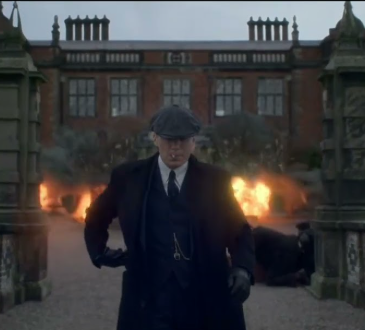

Iconic Scenes
- The opening scene of Season 1, where Tommy Shelby walks through the streets of Birmingham, setting the tone for the series.
- The intense confrontation between Tommy and Inspector Campbell in Season 2, showcasing their complex relationship.
- The dramatic wedding scene in Season 3, filled with tension and unexpected twists.
- The climactic showdown in Season 4 between the Peaky Blinders and the Italian mafia.
- The emotional farewell of Polly Gray in Season 5, highlighting her significance to the Shelby family.
Images of Iconic Scenes
- 